Nginx实现服务器端集群搭建
Nginx与Tomcat部署
前面课程已经将Nginx的大部分内容进行了讲解，我们都知道了Nginx在高并发场景和处理静态资源是非常高性能的，但是在实际项目中除了静态资源还有就是后台业务代码模块，一般后台业务都会被部署在Tomcat，weblogic或者是websphere等web服务器上。那么如何使用Nginx接收用户的请求并把请求转发到后台web服务器？

步骤分析:
1.准备Tomcat环境，并在Tomcat上部署一个web项目
2.准备Nginx环境，使用Nginx接收请求，并把请求分发到Tomat上
环境准备(Tomcat)
浏览器访问:
http://192.168.200.146:8080/demo/index.html
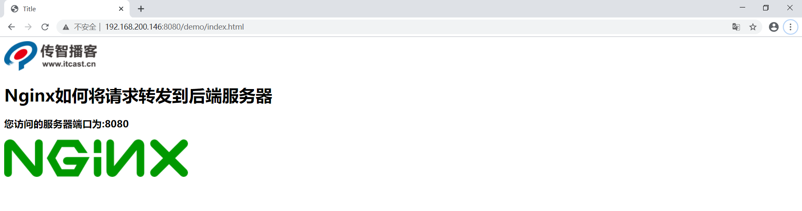
获取动态资源的链接地址:
http://192.168.200.146:8080/demo/getAddress
本次课程将采用Tomcat作为后台web服务器
（1）在Centos上准备一个Tomcat
1.Tomcat官网地址:https://tomcat.apache.org/
2.下载tomcat,本次课程使用的是apache-tomcat-8.5.59.tar.gz
3.将tomcat进行解压缩
mkdir web_tomcat
tar -zxf apache-tomcat-8.5.59.tar.gz -C /web_tomcat
（2）准备一个web项目，将其打包为war
1.将资料中的demo.war上传到tomcat8目录下的webapps包下
2.将tomcat进行启动，进入tomcat8的bin目录下
./startup.sh
（3）启动tomcat进行访问测试。
静态资源: http://192.168.200.146:8080/demo/index.html
动态资源: http://192.168.200.146:8080/demo/getAddress
环境准备(Nginx)
（1）使用Nginx的反向代理，将请求转给Tomcat进行处理。
upstream webservice {
server 192.168.200.146:8080;
}
server{
listen 80;
server_name localhost;
location /demo {
proxy_pass http://webservice;
}
}
（2）启动访问测试

学习到这，可能大家会有一个困惑，明明直接通过tomcat就能访问，为什么还需要多加一个nginx，这样不是反而是系统的复杂度变高了么? 那接下来我们从两个方便给大家分析下这个问题，
第一个使用Nginx实现动静分离
第二个使用Nginx搭建Tomcat的集群
Nginx实现动静分离
什么是动静分离?
动:后台应用程序的业务处理
静:网站的静态资源(html,javaScript,css,images等文件)
分离:将两者进行分开部署访问，提供用户进行访问。举例说明就是以后所有和静态资源相关的内容都交给Nginx来部署访问，非静态内容则交个类似于Tomcat的服务器来部署访问。
为什么要动静分离?
前面我们介绍过Nginx在处理静态资源的时候，效率是非常高的，而且Nginx的并发访问量也是名列前茅，而Tomcat则相对比较弱一些，所以把静态资源交个Nginx后，可以减轻Tomcat服务器的访问压力并提高静态资源的访问速度。
动静分离以后，降低了动态资源和静态资源的耦合度。如动态资源宕机了也不影响静态资源的展示。
如何实现动静分离?
实现动静分离的方式很多，比如静态资源可以部署到CDN、Nginx等服务器上，动态资源可以部署到Tomcat,weblogic或者websphere上。本次课程只要使用Nginx+Tomcat来实现动静分离。
需求分析

动静分离实现步骤
1.将demo.war项目中的静态资源都删除掉，重新打包生成一个war包，在资料中有提供。
2.将war包部署到tomcat中，把之前部署的内容删除掉
进入到tomcat的webapps目录下，将之前的内容删除掉
将新的war包复制到webapps下
将tomcat启动
3.在Nginx所在服务器创建如下目录，并将对应的静态资源放入指定的位置
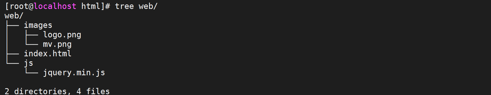
其中index.html页面的内容如下:
<!DOCTYPE html>
<html lang="en">
<head>
<meta charset="UTF-8">
<title>Title</title>
<script src="js/jquery.min.js"></script>
<script>
$(function(){
$.get('http://192.168.200.133/demo/getAddress',function(data){
$("#msg").html(data);
});
});
</script>
</head>
<body>
<img src="images/logo.png"/>
<h1>Nginx如何将请求转发到后端服务器</h1>
<h3 id="msg"></h3>
<img src="images/mv.png"/>
</body>
</html>
4.配置Nginx的静态资源与动态资源的访问
upstream webservice{
server 192.168.200.146:8080;
}
server {
listen 80;
server_name localhost;
#动态资源
location /demo {
proxy_pass http://webservice;
}
#静态资源
location ~/.*\.(png|jpg|gif|js){
root html/web;
gzip on;
}
location / {
root html/web;
index index.html index.htm;
}
}
5.启动测试，访问http://192.168.200.133/index.html

假如某个时间点，由于某个原因导致Tomcat后的服务器宕机了，我们再次访问Nginx,会得到如下效果，用户还是能看到页面，只是缺失了访问次数的统计，这就是前后端耦合度降低的效果，并且整个请求只和后的服务器交互了一次，js和images都直接从Nginx返回，提供了效率，降低了后的服务器的压力。
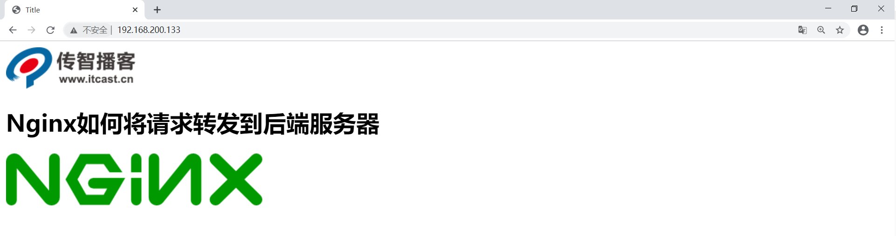
Nginx实现Tomcat集群搭建
在使用Nginx和Tomcat部署项目的时候，我们使用的是一台Nginx服务器和一台Tomcat服务器，效果图如下:
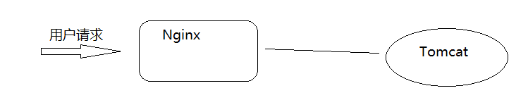
那么问题来了，如果Tomcat的真的宕机了，整个系统就会不完整，所以如何解决上述问题，一台服务器容易宕机，那就多搭建几台Tomcat服务器，这样的话就提升了后的服务器的可用性。这也就是我们常说的集群，搭建Tomcat的集群需要用到了Nginx的反向代理和赋值均衡的知识，具体如何来实现?我们先来分析下原理

环境准备：
(1)准备3台tomcat,使用端口进行区分[实际环境应该是三台服务器]，修改server.ml，将端口修改分别修改为8080,8180,8280
(2)启动tomcat并访问测试，
http://192.168.200.146:8080/demo/getAddress

http://192.168.200.146:8180/demo/getAddress

http://192.168.200.146:8280/demo/getAddress

(3)在Nginx对应的配置文件中添加如下内容:
upstream webservice{
server 192.168.200.146:8080;
server 192.168.200.146:8180;
server 192.168.200.146:8280;
}
好了，完成了上述环境的部署，我们已经解决了Tomcat的高可用性，一台服务器宕机，还有其他两条对外提供服务，同时也可以实现后台服务器的不间断更新。但是新问题出现了，上述环境中，如果是Nginx宕机了呢，那么整套系统都将服务对外提供服务了，这个如何解决？
Nginx高可用解决方案
针对于上面提到的问题，我们来分析下要想解决上述问题，需要面临哪些问题?

需要两台以上的Nginx服务器对外提供服务，这样的话就可以解决其中一台宕机了，另外一台还能对外提供服务，但是如果是两台Nginx服务器的话，会有两个IP地址，用户该访问哪台服务器，用户怎么知道哪台是好的，哪台是宕机了的?
Keepalived
使用Keepalived来解决，Keepalived 软件由 C 编写的，最初是专为 LVS 负载均衡软件设计的，Keepalived 软件主要是通过 VRRP 协议实现高可用功能。
VRRP介绍
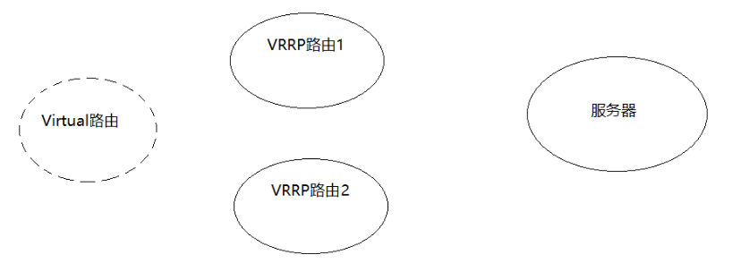
VRRP（Virtual Route Redundancy Protocol）协议，翻译过来为虚拟路由冗余协议。VRRP协议将两台或多台路由器设备虚拟成一个设备，对外提供虚拟路由器IP,而在路由器组内部，如果实际拥有这个对外IP的路由器如果工作正常的话就是MASTER,MASTER实现针对虚拟路由器IP的各种网络功能。其他设备不拥有该虚拟IP，状态为BACKUP,处了接收MASTER的VRRP状态通告信息以外，不执行对外的网络功能。当主机失效时，BACKUP将接管原先MASTER的网络功能。
从上面的介绍信息获取到的内容就是VRRP是一种协议，那这个协议是用来干什么的？
1.选择协议
VRRP可以把一个虚拟路由器的责任动态分配到局域网上的 VRRP 路由器中的一台。其中的虚拟路由即Virtual路由是由VRRP路由群组创建的一个不真实存在的路由，这个虚拟路由也是有对应的IP地址。而且VRRP路由1和VRRP路由2之间会有竞争选择，通过选择会产生一个Master路由和一个Backup路由。
2.路由容错协议
Master路由和Backup路由之间会有一个心跳检测，Master会定时告知Backup自己的状态，如果在指定的时间内，Backup没有接收到这个通知内容，Backup就会替代Master成为新的Master。Master路由有一个特权就是虚拟路由和后端服务器都是通过Master进行数据传递交互的，而备份节点则会直接丢弃这些请求和数据，不做处理，只是去监听Master的状态
用了Keepalived后，解决方案如下:

环境搭建
环境准备
| VIP | IP | 主机名 | 主/从 |
|---|---|---|---|
| 192.168.200.133 | keepalived1 | Master | |
| 192.168.200.222 | |||
| 192.168.200.122 | keepalived2 | Backup |
keepalived的安装
步骤1:从官方网站下载keepalived,官网地址https://keepalived.org/
步骤2:将下载的资源上传到服务器
keepalived-2.0.20.tar.gz
步骤3:创建keepalived目录，方便管理资源
mkdir keepalived
步骤4:将压缩文件进行解压缩，解压缩到指定的目录
tar -zxf keepalived-2.0.20.tar.gz -C keepalived/
步骤5:对keepalived进行配置，编译和安装
cd keepalived/keepalived-2.0.20
./configure --sysconf=/etc --prefix=/usr/local
make && make install
安装完成后，有两个文件需要我们认识下，一个是 /etc/keepalived/keepalived.conf(keepalived的系统配置文件，我们主要操作的就是该文件)，一个是/usr/local/sbin目录下的keepalived,是系统配置脚本，用来启动和关闭keepalived
Keepalived配置文件介绍
打开keepalived.conf配置文件
这里面会分三部，第一部分是global全局配置、第二部分是vrrp相关配置、第三部分是LVS相关配置。 本次课程主要是使用keepalived实现高可用部署，没有用到LVS，所以我们重点关注的是前两部分
global全局部分：
global_defs {
#通知邮件，当keepalived发送切换时需要发email给具体的邮箱地址
notification_email {
tom@itcast.cn
jerry@itcast.cn
}
#设置发件人的邮箱信息
notification_email_from zhaomin@itcast.cn
#指定smpt服务地址
smtp_server 192.168.200.1
#指定smpt服务连接超时时间
smtp_connect_timeout 30
#运行keepalived服务器的一个标识，可以用作发送邮件的主题信息
router_id LVS_DEVEL
#默认是不跳过检查。检查收到的VRRP通告中的所有地址可能会比较耗时，设置此命令的意思是，如果通告与接收的上一个通告来自相同的master路由器，则不执行检查(跳过检查)
vrrp_skip_check_adv_addr
#严格遵守VRRP协议。
vrrp_strict
#在一个接口发送的两个免费ARP之间的延迟。可以精确到毫秒级。默认是0
vrrp_garp_interval 0
#在一个网卡上每组na消息之间的延迟时间，默认为0
vrrp_gna_interval 0
}
VRRP部分，该部分可以包含以下四个子模块
1. vrrp_script
2. vrrp_sync_group
3. garp_group
4. vrrp_instance
我们会用到第一个和第四个，
#设置keepalived实例的相关信息，VI_1为VRRP实例名称
vrrp_instance VI_1 {
state MASTER #有两个值可选MASTER主 BACKUP备
interface ens33 #vrrp实例绑定的接口，用于发送VRRP包[当前服务器使用的网卡名称]
virtual_router_id 51#指定VRRP实例ID，范围是0-255
priority 100 #指定优先级，优先级高的将成为MASTER
advert_int 1 #指定发送VRRP通告的间隔，单位是秒
authentication { #vrrp之间通信的认证信息
auth_type PASS #指定认证方式。PASS简单密码认证(推荐)
auth_pass 1111 #指定认证使用的密码，最多8位
}
virtual_ipaddress { #虚拟IP地址设置虚拟IP地址，供用户访问使用，可设置多个，一行一个
192.168.200.222
}
}
配置内容如下:
服务器1
global_defs {
notification_email {
tom@itcast.cn
jerry@itcast.cn
}
notification_email_from zhaomin@itcast.cn
smtp_server 192.168.200.1
smtp_connect_timeout 30
router_id keepalived1
vrrp_skip_check_adv_addr
vrrp_strict
vrrp_garp_interval 0
vrrp_gna_interval 0
}
vrrp_instance VI_1 {
state MASTER
interface ens33
virtual_router_id 51
priority 100
advert_int 1
authentication {
auth_type PASS
auth_pass 1111
}
virtual_ipaddress {
192.168.200.222
}
}
服务器2
! Configuration File for keepalived
global_defs {
notification_email {
tom@itcast.cn
jerry@itcast.cn
}
notification_email_from zhaomin@itcast.cn
smtp_server 192.168.200.1
smtp_connect_timeout 30
router_id keepalived2
vrrp_skip_check_adv_addr
vrrp_strict
vrrp_garp_interval 0
vrrp_gna_interval 0
}
vrrp_instance VI_1 {
state BACKUP
interface ens33
virtual_router_id 51
priority 90
advert_int 1
authentication {
auth_type PASS
auth_pass 1111
}
virtual_ipaddress {
192.168.200.222
}
}
访问测试
- 启动keepalived之前，咱们先使用命令
ip a,查看192.168.200.133和192.168.200.122这两台服务器的IP情况。
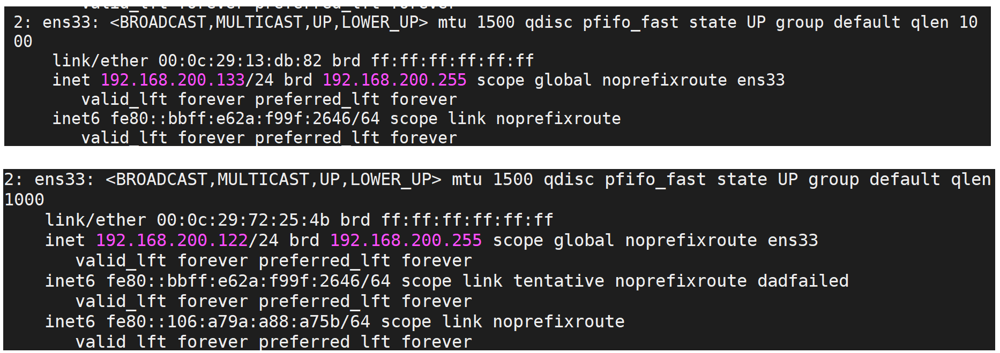
- 分别启动两台服务器的keepalived
cd /usr/local/sbin
./keepalived
再次通过 ip a查看ip
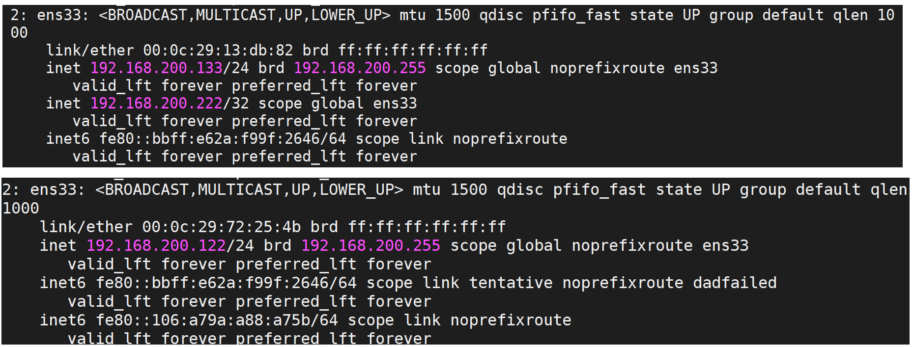
- 当把192.168.200.133服务器上的keepalived关闭后，再次查看ip

通过上述的测试，我们会发现，虚拟IP(VIP)会在MASTER节点上，当MASTER节点上的keepalived出问题以后，因为BACKUP无法收到MASTER发出的VRRP状态通过信息，就会直接升为MASTER。VIP也会"漂移"到新的MASTER。
上面测试和Nginx有什么关系?
我们把192.168.200.133服务器的keepalived再次启动下，由于它的优先级高于服务器192.168.200.122的，所有它会再次成为MASTER，VIP也会"漂移"过去，然后我们再次通过浏览器访问:
http://192.168.200.222/

如果把192.168.200.133服务器的keepalived关闭掉，再次访问相同的地址
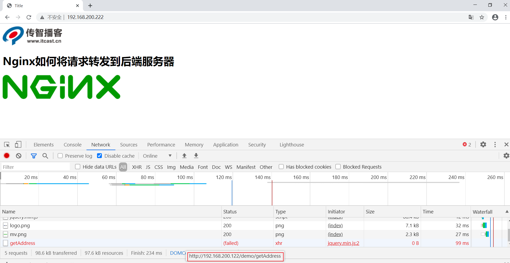
效果实现了以后， 我们会发现要想让vip进行切换，就必须要把服务器上的keepalived进行关闭，而什么时候关闭keepalived呢?应该是在keepalived所在服务器的nginx出现问题后，把keepalived关闭掉，就可以让VIP执行另外一台服务器，但是现在这所有的操作都是通过手动来完成的，我们如何能让系统自动判断当前服务器的nginx是否正确启动，如果没有，要能让VIP自动进行"漂移"，这个问题该如何解决?
keepalived之vrrp_script
keepalived只能做到对网络故障和keepalived本身的监控，即当出现网络故障或者keepalived本身出现问题时，进行切换。但是这些还不够，我们还需要监控keepalived所在服务器上的其他业务，比如Nginx,如果Nginx出现异常了，仅仅keepalived保持正常，是无法完成系统的正常工作的，因此需要根据业务进程的运行状态决定是否需要进行主备切换，这个时候，我们可以通过编写脚本对业务进程进行检测监控。
实现步骤:
- 在keepalived配置文件中添加对应的配置像
vrrp_script 脚本名称
{
script "脚本位置"
interval 3 #执行时间间隔
weight -20 #动态调整vrrp_instance的优先级
}
- 编写脚本
ck_nginx.sh
#!/bin/bash
num=`ps -C nginx --no-header | wc -l`
if [ $num -eq 0 ];then
/usr/local/nginx/sbin/nginx
sleep 2
if [ `ps -C nginx --no-header | wc -l` -eq 0 ]; then
killall keepalived
fi
fi
Linux ps命令用于显示当前进程 (process) 的状态。
-C(command) :指定命令的所有进程
--no-header 排除标题
- 为脚本文件设置权限
chmod 755 ck_nginx.sh
- 将脚本添加到
vrrp_script ck_nginx {
script "/etc/keepalived/ck_nginx.sh" #执行脚本的位置
interval 2 #执行脚本的周期，秒为单位
weight -20 #权重的计算方式
}
vrrp_instance VI_1 {
state MASTER
interface ens33
virtual_router_id 10
priority 100
advert_int 1
authentication {
auth_type PASS
auth_pass 1111
}
virtual_ipaddress {
192.168.200.111
}
track_script {
ck_nginx
}
}
- 如果效果没有出来，可以使用
tail -f /var/log/messages查看日志信息，找对应的错误信息。 - 测试
问题思考:
通常如果master服务死掉后backup会变成master，但是当master服务又好了的时候 master此时会抢占VIP，这样就会发生两次切换对业务繁忙的网站来说是不好的。所以我们要在配置文件加入 nopreempt 非抢占，但是这个参数只能用于state 为backup，故我们在用HA的时候最好master 和backup的state都设置成backup 让其通过priority来竞争。
Nginx制作下载站点
首先我们先要清楚什么是下载站点?
我们先来看一个网站http://nginx.org/download/这个我们刚开始学习Nginx的时候给大家看过这样的网站，该网站主要就是用来提供用户来下载相关资源的网站，就叫做下载网站。

如何制作一个下载站点:
nginx使用的是模块ngx_http_autoindex_module来实现的，该模块处理以斜杠("/")结尾的请求，并生成目录列表。
nginx编译的时候会自动加载该模块，但是该模块默认是关闭的，我们需要使用下来指令来完成对应的配置
（1）autoindex:启用或禁用目录列表输出
| 语法 | autoindex on\ | off; |
|---|---|---|
| 默认值 | autoindex off; | |
| 位置 | http、server、location |
（2）autoindex_exact_size:对应HTLM格式，指定是否在目录列表展示文件的详细大小
默认为on，显示出文件的确切大小，单位是bytes。 改为off后，显示出文件的大概大小，单位是kB或者MB或者GB
| 语法 | autoindex_exact_size on\ | off; |
|---|---|---|
| 默认值 | autoindex_exact_size on; | |
| 位置 | http、server、location |
（3）autoindex_format：设置目录列表的格式
| 语法 | autoindex_format html\ | xml\ | json\ | jsonp; |
|---|---|---|---|---|
| 默认值 | autoindex_format html; | |||
| 位置 | http、server、location |
注意:该指令在1.7.9及以后版本中出现
（4）autoindex_localtime:对应HTML格式，是否在目录列表上显示时间。
默认为off，显示的文件时间为GMT时间。 改为on后，显示的文件时间为文件的服务器时间
| 语法 | autoindex_localtime on \ | off; |
|---|---|---|
| 默认值 | autoindex_localtime off; | |
| 位置 | http、server、location |
配置方式如下:
location /download{
root /usr/local;
autoindex on;
autoindex_exact_size on;
autoindex_format html;
autoindex_localtime on;
}
XML/JSON格式[一般不用这两种方式]


Nginx的用户认证模块
对应系统资源的访问，我们往往需要限制谁能访问，谁不能访问。这块就是我们通常所说的认证部分，认证需要做的就是根据用户输入的用户名和密码来判定用户是否为合法用户，如果是则放行访问，如果不是则拒绝访问。
Nginx对应用户认证这块是通过ngx_http_auth_basic_module模块来实现的，它允许通过使用"HTTP基本身份验证"协议验证用户名和密码来限制对资源的访问。默认情况下nginx是已经安装了该模块，如果不需要则使用--without-http_auth_basic_module。
该模块的指令比较简单，
（1）auth_basic:使用“ HTTP基本认证”协议启用用户名和密码的验证
| 语法 | auth_basic string\ | off; |
|---|---|---|
| 默认值 | auth_basic off; | |
| 位置 | http,server,location,limit_except |
开启后，服务端会返回401，指定的字符串会返回到客户端，给用户以提示信息，但是不同的浏览器对内容的展示不一致。
（2）auth_basic_user_file:指定用户名和密码所在文件
| 语法 | auth_basic_user_file file; |
|---|---|
| 默认值 | — |
| 位置 | http,server,location,limit_except |
指定文件路径，该文件中的用户名和密码的设置，密码需要进行加密。可以采用工具自动生成
实现步骤:
1.nginx.conf添加如下内容
location /download{
root /usr/local;
autoindex on;
autoindex_exact_size on;
autoindex_format html;
autoindex_localtime on;
auth_basic 'please input your auth';
auth_basic_user_file htpasswd;
}
2.我们需要使用htpasswd工具生成
yum install -y httpd-tools
htpasswd -c /usr/local/nginx/conf/htpasswd username //创建一个新文件记录用户名和密码
htpasswd -b /usr/local/nginx/conf/htpasswd username password //在指定文件新增一个用户名和密码
htpasswd -D /usr/local/nginx/conf/htpasswd username //从指定文件删除一个用户信息
htpasswd -v /usr/local/nginx/conf/htpasswd username //验证用户名和密码是否正确

上述方式虽然能实现用户名和密码的验证，但是大家也看到了，所有的用户名和密码信息都记录在文件里面，如果用户量过大的话，这种方式就显得有点麻烦了，这时候我们就得通过后台业务代码来进行用户权限的校验了。
Nginx的扩展模块
Nginx是可扩展的，可用于处理各种使用场景。本节中，我们将探讨使用Lua扩展Nginx的功能。
Lua
概念
Lua是一种轻量、小巧的脚本语言，用标准C语言编写并以源代码形式开发。设计的目的是为了嵌入到其他应用程序中，从而为应用程序提供灵活的扩展和定制功能。
特性
跟其他语言进行比较，Lua有其自身的特点：
（1）轻量级
Lua用标准C语言编写并以源代码形式开发，编译后仅仅一百余千字节，可以很方便的嵌入到其他程序中。
（2）可扩展
Lua提供非常丰富易于使用的扩展接口和机制，由宿主语言(通常是C或C++)提供功能，Lua可以使用它们，就像内置的功能一样。
（3）支持面向过程编程和函数式编程
应用场景
Lua在不同的系统中得到大量应用，场景的应用场景如下:
游戏开发、独立应用脚本、web应用脚本、扩展和数据库插件、系统安全上。
Lua的安装
在linux上安装Lua非常简单，只需要下载源码包并在终端解压、编译即可使用。
Lua的官网地址为:https://www.lua.org

- 点击download可以找到对应版本的下载地址，我们本次课程采用的是lua-5.3.5,其对应的资源链接地址为https://www.lua.org/ftp/lua-5.4.1.tar.gz,也可以使用wget命令直接下载:
wget https://www.lua.org/ftp/lua-5.4.1.tar.gz
- 编译安装
cd lua-5.4.1
make linux test
make install
如果在执行make linux test失败，报如下错误:
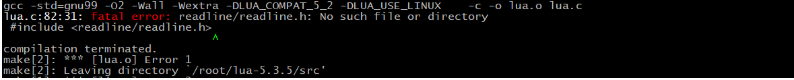
说明当前系统缺少libreadline-dev依赖包，需要通过命令来进行安装
yum install -y readline-devel
验证是否安装成功
lua -v
Lua的语法
Lua和C/C++语法非常相似，整体上比较清晰，简洁。条件语句、循环语句、函数调用都与C/C++基本一致。如果对C/C++不太熟悉的同学来说，也没关系，因为天下语言是一家，基本上理解起来都不会太困难。我们一点点来讲。
第一个Lua程序
大家需要知道的是，Lua有两种交互方式，分别是:交互式和脚本式，这两者的区别，下面我们分别来讲解下：
交互式之HELLOWORLD
交互式是指可以在命令行输入程序，然后回车就可以看到运行的效果。
Lua交互式编程模式可以通过命令lua -i 或lua来启用:
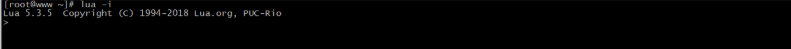
在命令行中key输入如下命令，并按回车,会有输出在控制台：
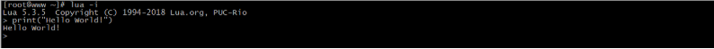
脚本式之HELLOWORLD
脚本式是将代码保存到一个以lua为扩展名的文件中并执行的方式。
方式一:
我们需要一个文件名为 hello.lua,在文件中添加要执行的代码，然后通过命令 lua hello.lua来执行，会在控制台输出对应的结果。
hello.lua
print("Hello World!!")

方式二:
将hello.lua做如下修改
#!/usr/local/bin/lua
print("Hello World!!!")
第一行用来指定Lua解释器所在位置为 /usr/local/bin/lua，加上#号标记解释器会忽略它。一般情况下#!就是用来指定用哪个程序来运行本文件。但是hello.lua并不是一个可执行文件，需要通过chmod来设置可执行权限，最简单的方式为:
chmod 755 hello.lua
然后执行该文件
./hello.lua

补充一点，如果想在交互式中运行脚本式的hello.lua中的内容，我们可以使用一个dofile函数，如：
dofile("lua_demo/hello.lua")
注意:在Lua语言中，连续语句之间的分隔符并不是必须的，也就是说后面不需要加分号，当然加上也不会报错，
在Lua语言中，表达式之间的换行也起不到任何作用。如以下四个写法，其实都是等效的
写法一
a=1
b=a+2
写法二
a=1;
b=a+2;
写法三
a=1; b=a+2;
写法四
a=1 b=a+2
不建议使用第四种方式，可读性太差。
Lua的注释
关于Lua的注释要分两种，第一种是单行注释，第二种是多行注释。
单行注释的语法为：
--注释内容
多行注释的语法为:
--[[
注释内容
注释内容
--]]
如果想取消多行注释，只需要在第一个--之前在加一个-即可，如：
---[[
注释内容
注释内容
--]]
标识符
换句话说标识符就是我们的变量名，Lua定义变量名以一个字母 A 到 Z 或 a 到 z 或下划线 _ 开头后加上0个或多个字母，下划线，数字（0到9）。这块建议大家最好不要使用下划线加大写字母的标识符，因为Lua的保留字也是这样定义的，容易发生冲突。注意Lua是区分大小写字母的。
A0
关键字
下列是Lua的关键字，大家在定义常量、变量或其他用户自定义标识符都要避免使用以下这些关键字：
| and | break | do | else |
|---|---|---|---|
| elseif | end | false | for |
| function | if | in | local |
| nil | not | or | repeat |
| return | then | true | until |
| while | goto |
一般约定，以下划线开头连接一串大写字母的名字（比如 _VERSION）被保留用于 Lua 内部全局变量。这个也是上面我们不建议这么定义标识符的原因。
运算符
Lua中支持的运算符有算术运算符、关系运算符、逻辑运算符、其他运算符。
算术运算符:
+ 加法
- 减法
* 乘法
/ 除法
% 取余
^ 乘幂
- 负号
例如:
10+20 -->30
20-10 -->10
10*20 -->200
20/10 -->2
3%2 -->1
10^2 -->100
-10 -->-10
关系运算符
== 等于
~= 不等于
> 大于
< 小于
>= 大于等于
<= 小于等于
例如:
10==10 -->true
10~=10 -->false
20>10 -->true
20<10 -->false
20>=10 -->true
20<=10 -->false
逻辑运算符
and 逻辑与 A and B &&
or 逻辑或 A or B ||
not 逻辑非 取反，如果为true,则返回false !
逻辑运算符可以作为if的判断条件，返回的结果如下:
A = true
B = true
A and B -->true
A or B -->true
not A -->false
A = true
B = false
A and B -->false
A or B -->true
not A -->false
A = false
B = true
A and B -->false
A or B -->true
not A -->true
其他运算符
.. 连接两个字符串
# 一元预算法，返回字符串或表的长度
例如:
> "HELLO ".."WORLD" -->HELLO WORLD
> #"HELLO" -->5
全局变量&局部变量
在Lua语言中，全局变量无须声明即可使用。在默认情况下，变量总是认为是全局的，如果未提前赋值，默认为nil:
要想声明一个局部变量，需要使用local来声明

Lua数据类型
Lua有8个数据类型
nil(空，无效值)
boolean(布尔，true/false)
number(数值)
string(字符串)
function(函数)
table（表）
thread(线程)
userdata（用户数据）
可以使用type函数测试给定变量或者的类型：
print(type(nil)) -->nil
print(type(true)) --> boolean
print(type(1.1*1.1)) --> number
print(type("Hello world")) --> string
print(type(io.stdin)) -->userdata
print(type(print)) --> function
print(type(type)) -->function
print(type{}) -->table
print(type(type(X))) --> string
nil
nil是一种只有一个nil值的类型，它的作用可以用来与其他所有值进行区分，也可以当想要移除一个变量时，只需要将该变量名赋值为nil,垃圾回收就会会释放该变量所占用的内存。
boolean
boolean类型具有两个值，true和false。boolean类型一般被用来做条件判断的真与假。在Lua语言中，只会将false和nil视为假，其他的都视为真，特别是在条件检测中0和空字符串都会认为是真，这个和我们熟悉的大多数语言不太一样。
number
在Lua5.3版本开始，Lua语言为数值格式提供了两种选择:integer(整型)和float(双精度浮点型)[和其他语言不太一样，float不代表单精度类型]。
数值常量的表示方式:
>4 -->4
>0.4 -->0.4
>4.75e-3 -->0.00475
>4.75e3 -->4750
不管是整型还是双精度浮点型，使用type()函数来取其类型，都会返回的是number
>type(3) -->number
>type(3.3) -->number
所以它们之间是可以相互转换的，同时，具有相同算术值的整型值和浮点型值在Lua语言中是相等的
string
Lua语言中的字符串即可以表示单个字符，也可以表示一整本书籍。在Lua语言中，操作100K或者1M个字母组成的字符串的程序很常见。
可以使用单引号或双引号来声明字符串
>a = "hello"
>b = 'world'
>print(a) -->hello
>print(b) -->world
如果声明的字符串比较长或者有多行，则可以使用如下方式进行声明
html = [[
<html>
<head>
<title>Lua-string</title>
</head>
<body>
<a href="http://www.lua.org">Lua</a>
</body>
</html>
]]
table
table是Lua语言中最主要和强大的数据结构。使用表， Lua 语言可以以一种简单、统一且高效的方式表示数组、集合、记录和其他很多数据结构。 Lua语言中的表本质上是一种辅助数组。这种数组比Java中的数组更加灵活，可以使用数值做索引，也可以使用字符串或其他任意类型的值作索引(除nil外)。
创建表的最简单方式:
> a = {}
创建数组:
我们都知道数组就是相同数据类型的元素按照一定顺序排列的集合，那么使用table如何创建一个数组呢?
>arr = {"TOM","JERRY","ROSE"}
要想获取数组中的值，我们可以通过如下内容来获取:
print(arr[0]) nil
print(arr[1]) TOM
print(arr[2]) JERRY
print(arr[3]) ROSE
从上面的结果可以看出来，数组的下标默认是从1开始的。所以上述创建数组，也可以通过如下方式来创建
>arr = {}
>arr[1] = "TOM"
>arr[2] = "JERRY"
>arr[3] = "ROSE"
上面我们说过了，表的索引即可以是数字，也可以是字符串等其他的内容，所以我们也可以将索引更改为字符串来创建
>arr = {}
>arr["X"] = 10
>arr["Y"] = 20
>arr["Z"] = 30
当然，如果想要获取这些数组中的值，可以使用下面的方式
方式一
>print(arr["X"])
>print(arr["Y"])
>print(arr["Z"])
方式二
>print(arr.X)
>print(arr.Y)
>print(arr.Z)
当前table的灵活不进于此，还有更灵活的声明方式
>arr = {"TOM",X=10,"JERRY",Y=20,"ROSE",Z=30}
如何获取上面的值?
TOM : arr[1]
10 : arr["X"] | arr.X
JERRY: arr[2]
20 : arr["Y"] | arr.Y
ROESE?
function
在 Lua语言中，函数（ Function ）是对语句和表达式进行抽象的主要方式。
定义函数的语法为:
function functionName(params)
end
函数被调用的时候，传入的参数个数与定义函数时使用的参数个数不一致的时候，Lua 语言会通过 抛弃多余参数和将不足的参数设为 nil 的方式来调整参数的个数。
function f(a,b)
print(a,b)
end
f() --> nil nil
f(2) --> 2 nil
f(2,6) --> 2 6
f(2.6.8) --> 2 6 (8被丢弃)
可变长参数函数
function add(...)
a,b,c=...
print(a)
print(b)
print(c)
end
add(1,2,3) --> 1 2 3
函数返回值可以有多个，这点和Java不太一样
function f(a,b)
return a,b
end
x,y=f(11,22) --> x=11,y=22
thread
thread翻译过来是线程的意思，在Lua中，thread用来表示执行的独立线路，用来执行协同程序。
userdata
userdata是一种用户自定义数据，用于表示一种由应用程序或C/C++语言库所创建的类型。
Lua控制结构
Lua 语言提供了一组精简且常用的控制结构，包括用于条件执行的证 以及用于循环的 while、 repeat 和 for。 所有的控制结构语法上都有一个显式的终结符： end 用于终结 if、 for 及 while 结构， until 用于终结 repeat 结构。
if then elseif else
if语句先测试其条件，并根据条件是否满足执行相应的 then 部分或 else 部分。 else 部分 是可选的。
function testif(a)
if a>0 then
print("a是正数")
end
end
function testif(a)
if a>0 then
print("a是正数")
else
print("a是负数")
end
end
如果要编写嵌套的 if 语句，可以使用 elseif。 它类似于在 else 后面紧跟一个if。根据传入的年龄返回不同的结果，如
age<=18 青少年，
age>18 , age <=45 青年
age>45 , age<=60 中年人
age>60 老年人
function show(age)
if age<=18 then
return "青少年"
elseif age>18 and age<=45 then
return "青年"
elseif age>45 and age<=60 then
return "中年人"
elseif age>60 then
return "老年人"
end
end
while循环
顾名思义，当条件为真时 while 循环会重复执行其循环体。 Lua 语言先测试 while 语句 的条件，若条件为假则循环结束；否则， Lua 会执行循环体并不断地重复这个过程。
语法：
while 条件 do
循环体
end
例子:实现数组的循环
function testWhile()
local i = 1
while i<=10 do
print(i)
i=i+1
end
end
repeat循环
顾名思义， repeat-until语句会重复执行其循环体直到条件为真时结束。 由于条件测试在循环体之后执行，所以循环体至少会执行一次。
语法
repeat
循环体
until 条件
function testRepeat()
local i = 10
repeat
print(i)
i=i-1
until i < 1
end
for循环
数值型for循环
语法
for param=exp1,exp2,exp3 do
循环体
end
param的值从exp1变化到exp2之前的每次循环会执行 循环体，并在每次循环结束后将步长(step)exp3增加到param上。exp3可选，如果不设置默认为1
for i = 1,100,10 do
print(i)
end
泛型for循环
泛型for循环通过一个迭代器函数来遍历所有值，类似于java中的foreach语句。
语法
for i,v in ipairs(x) do
循环体
end
i是数组索引值，v是对应索引的数组元素值，ipairs是Lua提供的一个迭代器函数，用来迭代数组，x是要遍历的数组。
例如:
arr = {"TOME","JERRY","ROWS","LUCY"}
for i,v in ipairs(arr) do
print(i,v)
end
上述实例输出的结果为
1 TOM
2 JERRY
3 ROWS
4 LUCY
但是如果将arr的值进行修改为
arr = {"TOME","JERRY","ROWS",x="JACK","LUCY"}
同样的代码在执行的时候，就只能看到和之前一样的结果，而其中的x为JACK就无法遍历出来，缺失了数据，如果解决呢?
我们可以将迭代器函数变成pairs,如
for i,v in pairs(arr) do
print(i,v)
end
上述实例就输出的结果为
1 TOM
2 JERRY
3 ROWS
4 LUCY
x JACK
ngx_lua模块概念
淘宝开发的ngx_lua模块通过将lua解释器集成进Nginx，可以采用lua脚本实现业务逻辑，由于lua的紧凑、快速以及内建协程，所以在保证高并发服务能力的同时极大地降低了业务逻辑实现成本。
ngx_lua模块环境准备
方式一:lua-nginx-module
- LuaJIT是采用C语言编写的Lua代表的解释器。
官网地址为:http://luajit.org/
在官网上找到对应的下载地址:http://luajit.org/download/LuaJIT-2.0.5.tar.gz
在centos上使用wget来下载: wget http://luajit.org/download/LuaJIT-2.0.5.tar.gz
将下载的资源进行解压: tar -zxf LuaJIT-2.0.5.tar.gz
进入解压的目录: cd LuaJIT-2.0.5
执行编译和安装: make && make install
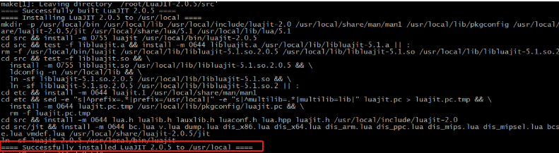
- 下载lua-nginx-module
下载地址:https://github.com/openresty/lua-nginx-module/archive/v0.10.16rc4.tar.gz
在centos上使用wget来下载: wget https://github.com/openresty/lua-nginx-module/archive/v0.10.16rc4.tar.gz
将下载的资源进行解压: tar -zxf lua-nginx-module-0.10.16rc4.tar.gz
更改目录名:mv lua-nginx-module-0.10.16rc4 lua-nginx-module
导入环境变量，告诉Nginx去哪里找luajit
export LUAJIT_LIB=/usr/local/lib
export LUAJIT_INC=/usr/local/include/luajit-2.0
进入Nginx的目录执行如下命令:
./configure --prefix=/usr/local/nginx --add-module=../lua-nginx-module
make && make install
注意事项:
（1）如果启动Nginx出现如下错误:

解决方案:
设置软链接，使用如下命令
ln -s /usr/local/lib/libluajit-5.1.so.2 /lib64/libluajit-5.1.so.2
（2）如果启动Nginx出现以下错误信息

分析原因:因为lua-nginx-module是来自openrestry,错误中提示的resty.core是openrestry的核心模块，对其下的很多函数进行了优化等工作。以前的版本默认不会把该模块编译进去，所以需要使用的话，我们得手动安装，或者禁用就可以。但是最新的lua-nginx-module模块已经强制性安装了该模块，所以此处因为缺少resty模块导致的报错信息。
解决方案有两个:一种是下载对应的模块，另一种则是禁用掉restry模块，禁用的方式为:
http{
lua_load_resty_core off;
}
- 测试
在nginx.conf下配置如下内容:
location /lua{
default_type 'text/html';
content_by_lua 'ngx.say("<h1>HELLO,LUA</h1>")';
}
配置成功后，启动nginx,通过浏览器进行访问，如果获取到如下结果，则证明安装成功。
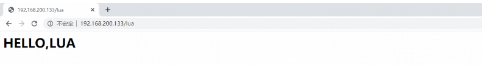
方式二:OpenRestry
概述
前面我们提到过，OpenResty是由淘宝工程师开发的，所以其官方网站(http://openresty.org/)我们读起来是非常的方便。OpenResty是一个基于Nginx与 Lua 的高性能 Web 平台，其内部集成了大量精良的 Lua 库、第三方模块以及大多数的依赖项。用于方便地搭建能够处理超高并发、扩展性极高的动态 Web 应用、Web 服务和动态网关。所以本身OpenResty内部就已经集成了Nginx和Lua，所以我们使用起来会更加方便。
安装
(1) 下载OpenResty：https://openresty.org/download/openresty-1.15.8.2.tar.gz
(2)使用wget下载: wget https://openresty.org/download/openresty-1.15.8.2.tar.gz
(3)解压缩: tar -zxf openresty-1.15.8.2.tar.gz
(4)进入OpenResty目录: cd openresty-1.15.8.2
(5) 执行命令:./configure
(6) 执行命令:make && make install
(7)进入OpenResty的目录，找到nginx：cd /usr/local/openresty/nginx/
(8)在conf目录下的nginx.conf添加如下内容
location /lua{
default_type 'text/html';
content_by_lua 'ngx.say("<h1>HELLO,OpenRestry</h1>")';
}
(9)在sbin目录下启动nginx
(10)通过浏览器访问测试
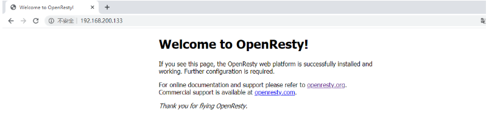

ngx_lua的使用
使用Lua编写Nginx脚本的基本构建块是指令。指令用于指定何时运行用户Lua代码以及如何使用结果。下图显示了执行指令的顺序。

先来解释下*的作用
*：无 ， 即 xxx_by_lua ,指令后面跟的是 lua指令
*:_file，即 xxx_by_lua_file 指令后面跟的是 lua文件
*:_block,即 xxx_by_lua_block 在0.9.17版后替换init_by_lua_file
init_by_lua*
该指令在每次Nginx重新加载配置时执行，可以用来完成一些耗时模块的加载，或者初始化一些全局配置。
init_worker_by_lua*
该指令用于启动一些定时任务，如心跳检查、定时拉取服务器配置等。
set_by_lua*
该指令只要用来做变量赋值，这个指令一次只能返回一个值，并将结果赋值给Nginx中指定的变量。
rewrite_by_lua*
该指令用于执行内部URL重写或者外部重定向，典型的如伪静态化URL重写，本阶段在rewrite处理阶段的最后默认执行。
access_by_lua*
该指令用于访问控制。例如，如果只允许内网IP访问。
content_by_lua*
该指令是应用最多的指令，大部分任务是在这个阶段完成的，其他的过程往往为这个阶段准备数据，正式处理基本都在本阶段。
header_filter_by_lua*
该指令用于设置应答消息的头部信息。
body_filter_by_lua*
该指令是对响应数据进行过滤，如截断、替换。
log_by_lua*
该指令用于在log请求处理阶段，用Lua代码处理日志，但并不替换原有log处理。
balancer_by_lua*
该指令主要的作用是用来实现上游服务器的负载均衡器算法
sslcertificate_by*
该指令作用在Nginx和下游服务开始一个SSL握手操作时将允许本配置项的Lua代码。
需求:
http://192.168.200.133?name=张三&gender=1
Nginx接收到请求后，根据gender传入的值，如果gender传入的是1，则在页面上展示
张三先生,如果gender传入的是0，则在页面上展示张三女士,如果未传或者传入的不是1和2则在页面上展示张三。
实现代码
location /getByGender {
default_type 'text/html';
set_by_lua $name "
local uri_args = ngx.req.get_uri_args()
gender = uri_args['gender']
name = uri_args['name']
if gender=='1' then
return name..'先生'
elseif gender=='0' then
return name..'女士'
else
return name
end
";
header_filter_by_lua "
ngx.header.aaa='bbb'
";
return 200 $name;
}
ngx_lua操作Redis
Redis在系统中经常作为数据缓存、内存数据库使用，在大型系统中扮演着非常重要的作用。在Nginx核心系统中，Redis是常备组件。Nginx支持3种方法访问Redis,分别是HttpRedis模块、HttpRedis2Module、lua-resty-redis库。这三种方式中HttpRedis模块提供的指令少，功能单一，适合做简单缓存，HttpRedis2Module模块比HttpRedis模块操作更灵活，功能更强大。而Lua-resty-redis库是OpenResty提供的一个操作Redis的接口库，可根据自己的业务情况做一些逻辑处理，适合做复杂的业务逻辑。所以本次课程将主要以Lua-resty-redis来进行讲解。
lua-resty-redis环境准备
步骤一:准备一个Redis环境
连接地址
host= 192.168.200.111
port=6379
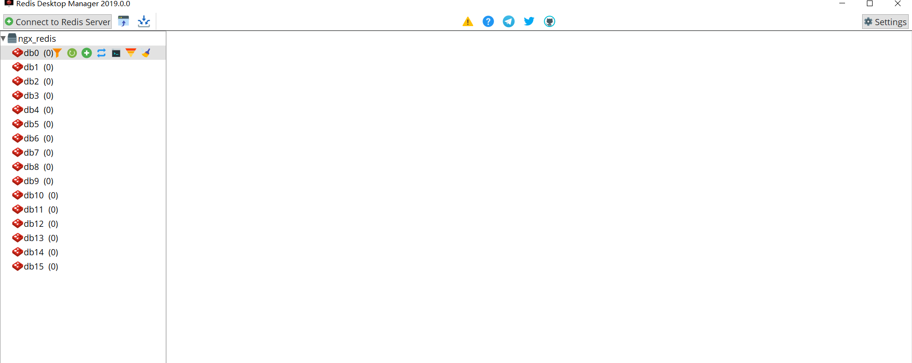
步骤二:准备对应的API
lua-resty-redis提供了访问Redis的详细API，包括创建对接、连接、操作、数据处理等。这些API基本上与Redis的操作一一对应。
（1）redis = require "resty.redis"
（2）new
语法: redis,err = redis:new(),创建一个Redis对象。
（3）connect
语法:ok,err=redis:connect(host,port[,options_table]),设置连接Redis的连接信息。
ok:连接成功返回 1，连接失败返回nil
err:返回对应的错误信息
（4）set_timeoutproperties
语法: redis:set_timeout(time) ，设置请求操作Redis的超时时间。
（5）close
语法: ok,err = redis:close(),关闭当前连接，成功返回1，失败返回nil和错误信息
（6）redis命令对应的方法
在lua-resty-redis中，所有的Redis命令都有自己的方法，方法名字和命令名字相同，只是全部为小写。
步骤三:效果实现
location / {
default_type "text/html";
content_by_lua_block{
local redis = require "resty.redis" -- 引入Redis
local redisObj = redis:new() --创建Redis对象
redisObj:set_timeout(1000) --设置超时数据为1s
local ok,err = redisObj:connect("192.168.200.1",6379) --设置redis连接信息
if not ok then --判断是否连接成功
ngx.say("failed to connection redis",err)
return
end
ok,err = redisObj:set("username","TOM")--存入数据
if not ok then --判断是否存入成功
ngx.say("failed to set username",err)
return
end
local res,err = redisObj:get("username") --从redis中获取数据
ngx.say(res) --将数据写会消息体中
redisObj:close()
}
}
步骤四:运行测试效果
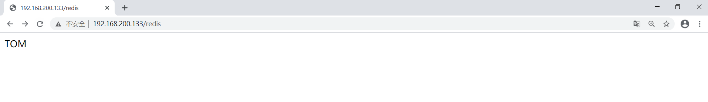
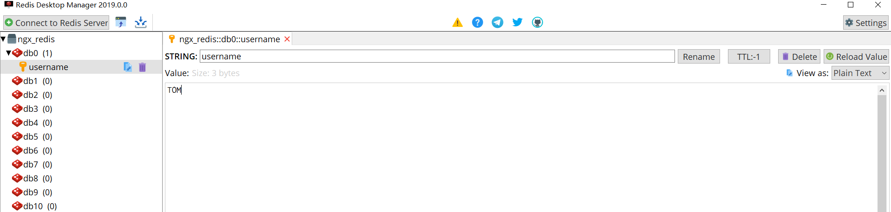
ngx_lua操作Mysql
MySQL是一个使用广泛的关系型数据库。在ngx_lua中，MySQL有两种访问模式,分别是使
（1）用ngx_lua模块和lua-resty-mysql模块：这两个模块是安装OpenResty时默认安装的。
（2）使用drizzle_nginx_module(HttpDrizzleModule)模块：需要单独安装，这个库现不在OpenResty中。
lua-resty-mysql
lua-resty-mysql是OpenResty开发的模块，使用灵活、功能强大，适合复杂的业务场景，同时支持存储过程的访问。
使用lua-resty-mysql实现数据库的查询
步骤一:
准备MYSQL
host: 192.168.200.111
port: 3306
username:root
password:123456
创建一个数据库表及表中的数据。
create database nginx_db;
use nginx_db;
create table users(
id int primary key auto_increment,
username varchar(30),
birthday date,
salary double
);
insert into users(id,username,birthday,salary) values(null,"TOM","1988-11-11",10000.0);
insert into users(id,username,birthday,salary) values(null,"JERRY","1989-11-11",20000.0);
insert into users(id,username,birthday,salary) values(null,"ROWS","1990-11-11",30000.0);
insert into users(id,username,birthday,salary) values(null,"LUCY","1991-11-11",40000.0);
insert into users(id,username,birthday,salary) values(null,"JACK","1992-11-11",50000.0);
数据库连接四要素:
driverClass=com.mysql.jdbc.Driver
url=jdbc:mysql://192.168.200.111:3306/nginx_db
username=root
password=123456
步骤二:API学习
（1）引入"resty.mysql"模块
local mysql = require "resty.mysql"
（2）new
创建一个MySQL连接对象，遇到错误时，db为nil，err为错误描述信息
语法: db,err = mysql:new()
（3）connect
尝试连接到一个MySQL服务器
语法:ok,err=db:connect(options),options是一个参数的Lua表结构，里面包含数据库连接的相关信息
host:服务器主机名或IP地址
port:服务器监听端口，默认为3306
user:登录的用户名
password:登录密码
database:使用的数据库名
（4）set_timeout
设置子请求的超时时间(ms)，包括connect方法
语法:db:set_timeout(time)
（5）close
关闭当前MySQL连接并返回状态。如果成功，则返回1；如果出现任何错误，则将返回nil和错误描述。
语法:db:close()
（6）send_query
异步向远程MySQL发送一个查询。如果成功则返回成功发送的字节数；如果错误，则返回nil和错误描述
语法:bytes,err=db:send_query(sql)
（7）read_result
从MySQL服务器返回结果中读取一行数据。res返回一个描述OK包或结果集包的Lua表,语法:
res, err, errcode, sqlstate = db:read_result()
res, err, errcode, sqlstate = db:read_result(rows) :rows指定返回结果集的最大值，默认为4
如果是查询，则返回一个容纳多行的数组。每行是一个数据列的key-value对，如
{
{id=1,username="TOM",birthday="1988-11-11",salary=10000.0},
{id=2,username="JERRY",birthday="1989-11-11",salary=20000.0}
}
如果是增删改，则返回类上如下数据
{
insert_id = 0,
server_status=2,
warning_count=1,
affected_rows=2,
message=nil
}
返回值:
res:操作的结果集
err:错误信息
errcode:MySQL的错误码，比如1064
sqlstate:返回由5个字符组成的标准SQL错误码，比如42000
步骤三:效果实现
location /{
content_by_lua_block{
local mysql = require "resty.mysql"
local db = mysql:new()
local ok,err = db:connect{
host="192.168.200.111",
port=3306,
user="root",
password="123456",
database="nginx_db"
}
db:set_timeout(1000)
db:send_query("select * from users where id =1")
local res,err,errcode,sqlstate = db:read_result()
ngx.say(res[1].id..","..res[1].username..","..res[1].birthday..","..res[1].salary)
db:close()
}
}
问题:
1.如何获取返回数据的内容
2.如何实现查询多条数据
3.如何实现数据库的增删改操作
使用lua-cjson处理查询结果
通过上述的案例学习，read_result()得到的结果res都是table类型，要想在页面上展示，就必须知道table的具体数据结构才能进行遍历获取。处理起来比较麻烦，接下来我们介绍一种简单方式cjson，使用它就可以将table类型的数据转换成json字符串，把json字符串展示在页面上即可。具体如何使用?
步骤一：引入cjson
llocal cjson = require "cjson"
步骤二：调用cjson的encode方法进行类型转换
cjson.encode(res)
步骤三:使用
location /{
content_by_lua_block{
local mysql = require "resty.mysql"
local cjson = require "cjson"
local db = mysql:new()
local ok,err = db:connect{
host="192.168.200.111",
port=3306,
user="root",
password="123456",
database="nginx_db"
}
db:set_timeout(1000)
--db:send_query("select * from users where id = 2")
db:send_query("select * from users")
local res,err,errcode,sqlstate = db:read_result()
ngx.say(cjson.encode(res))
for i,v in ipairs(res) do
ngx.say(v.id..","..v.username..","..v.birthday..","..v.salary)
end
db:close()
}
}
lua-resty-mysql实现数据库的增删改
优化send_query和read_result
本方法是send_query和read_result组合的快捷方法。
语法:
res, err, errcode, sqlstate = db:query(sql[,rows])
有了该API，上面的代码我们就可以进行对应的优化，如下:
location /{
content_by_lua_block{
local mysql = require "resty.mysql"
local db = mysql:new()
local ok,err = db:connect{
host="192.168.200.1",
port=3306,
user="root",
password="123456",
database="nginx_db",
max_packet_size=1024,
compact_arrays=false
}
db:set_timeout(1000)
local res,err,errcode,sqlstate = db:query("select * from users")
--local res,err,errcode,sqlstate = db:query("insert into users(id,username,birthday,salary) values(null,'zhangsan','2020-11-11',32222.0)")
--local res,err,errcode,sqlstate = db:query("update users set username='lisi' where id = 6")
--local res,err,errcode,sqlstate = db:query("delete from users where id = 6")
db:close()
}
}
综合小案例
使用ngx_lua模块完成Redis缓存预热。
分析:
（1）先得有一张表(users)
（2）浏览器输入如下地址
http://191.168.200.133?username=TOM
（3）从表中查询出符合条件的记录，此时获取的结果为table类型
（4）使用cjson将table数据转换成json字符串
（5）将查询的结果数据存入Redis中
init_by_lua_block{
redis = require "resty.redis"
mysql = require "resty.mysql"
cjson = require "cjson"
}
location /{
default_type "text/html";
content_by_lua_block{
--获取请求的参数username
local param = ngx.req.get_uri_args()["username"]
--建立mysql数据库的连接
local db = mysql:new()
local ok,err = db:connect{
host="192.168.200.111",
port=3306,
user="root",
password="123456",
database="nginx_db"
}
if not ok then
ngx.say("failed connect to mysql:",err)
return
end
--设置连接超时时间
db:set_timeout(1000)
--查询数据
local sql = "";
if not param then
sql="select * from users"
else
sql="select * from users where username=".."'"..param.."'"
end
local res,err,errcode,sqlstate=db:query(sql)
if not res then
ngx.say("failed to query from mysql:",err)
return
end
--连接redis
local rd = redis:new()
ok,err = rd:connect("192.168.200.111",6379)
if not ok then
ngx.say("failed to connect to redis:",err)
return
end
rd:set_timeout(1000)
--循环遍历数据
for i,v in ipairs(res) do
rd:set("user_"..v.username,cjson.encode(v))
end
ngx.say("success")
rd:close()
db:close()
}
}